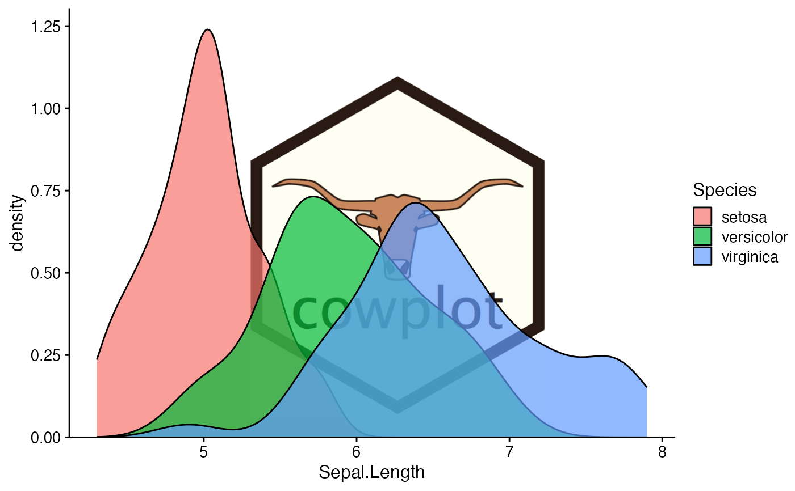
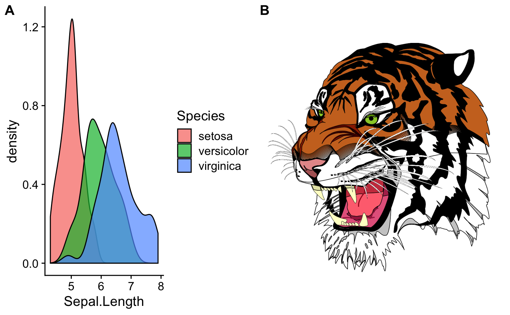
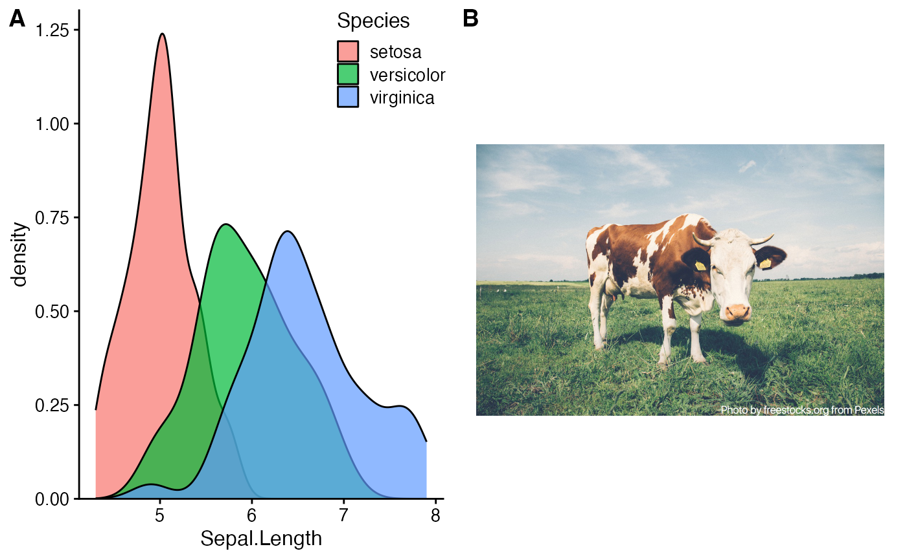
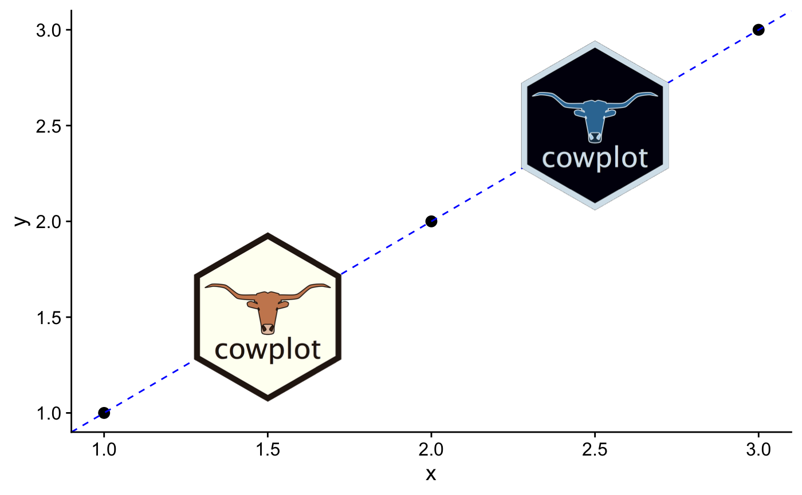

Places an image somewhere onto the drawing canvas. By default, coordinates run from
0 to 1, and the point (0, 0) is in the lower left corner of the canvas. Requires the magick
package to work, and fails gracefully if that package is not installed.
draw_image( image, x = 0, y = 0, width = 1, height = 1, scale = 1, clip = "inherit", interpolate = TRUE, hjust = 0, vjust = 0, halign = 0.5, valign = 0.5 )
| image | The image to place. Can be a file path, a URL, or a raw vector with image data,
as in |
|---|---|
| x | The x location of the image. (Left side if |
| y | The y location of the image. (Bottom side if |
| width | Width of the image. |
| height | Height of the image. |
| scale | Scales the image relative to the rectangle defined by |
| clip | Set to "on" to clip the image relative to the box into which it is draw (useful for |
| interpolate | A logical value indicating whether to linearly interpolate the image (the alternative is to use nearest-neighbour interpolation, which gives a more blocky result). |
| hjust, vjust | Horizontal and vertical justification relative to x. |
| halign, valign | Horizontal and vertical justification of the image inside the box. |
library(ggplot2) # Use image as plot background p <- ggplot(iris, aes(x = Sepal.Length, fill = Species)) + geom_density(alpha = 0.7) + scale_y_continuous(expand = expansion(mult = c(0, 0.05))) + theme_half_open(12) logo_file <- system.file("extdata", "logo.png", package = "cowplot") ggdraw() + draw_image( logo_file, scale = .7 ) + draw_plot(p)# Place in lower right corner ggdraw() + draw_image( logo_file, scale = .3, x = 1, hjust = 1, halign = 1, valign = 0 ) + draw_plot(p)# Make grid with plot and image cow_file <- system.file("extdata", "cow.jpg", package = "cowplot") p2 <- ggdraw() + draw_image(cow_file, scale = 0.9) plot_grid( p + theme(legend.position = c(1, 1), legend.justification = c(1, 1)), p2, labels = "AUTO" )# Manipulate images and draw in plot coordinates if (requireNamespace("magick", quietly = TRUE)){ img <- magick::image_transparent( magick::image_read(logo_file), color = "white" ) img2 <- magick::image_negate(img) ggplot(data.frame(x = 1:3, y = 1:3), aes(x, y)) + geom_point(size = 3) + geom_abline(slope = 1, intercept = 0, linetype = 2, color = "blue") + draw_image(img , x = 1, y = 1, scale = .9) + draw_image(img2, x = 2, y = 2, scale = .9) }